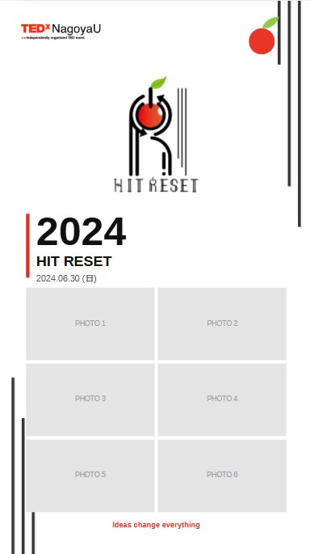
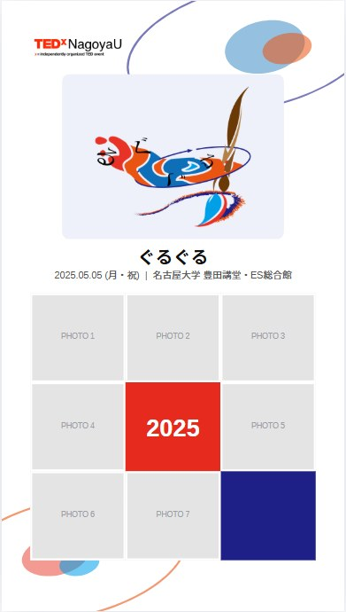
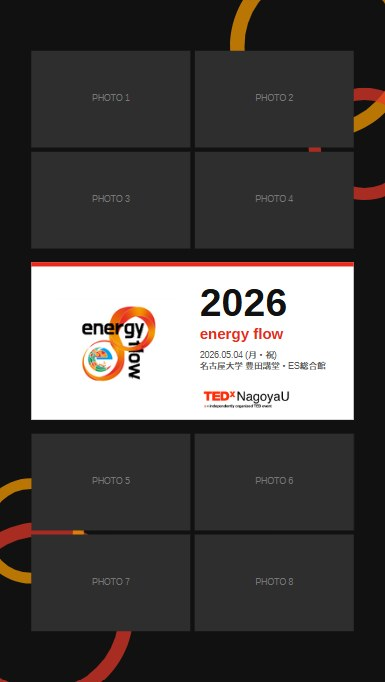

Activity ・ TEDxNagoyaU実行委員会
デザインチーム・tecチーム リーダー
TEDxNagoyaU実行委員会で、デザインチームとtecチームのリーダーを兼任しています。運営に関わるメンバーが迷わず動けるよう、組織づくりに取り組んでいます。
デザイン
線・円・ブロックなどの図形を組み合わせて画面を構成するデザインを得意としています。下は、歴代のイベントテーマ（2022〜2026）ごとに作った Instagram ハイライト用テンプレートの一部です。テーマのロゴの色と形を拾い、毎年の雰囲気に合わせて図形の組み方を変えています。



ミーティングの進め方
- ミーティングでしかできないことをやる：共有や報告など、文章で済むことは事前や事後に回し、集まった時間は話し合いと決定に使うようにしました。
- 指名して意見を求める：誰も発言しないまま進むのを防ぐため、会議では一人ひとりを指名して意見を聞くようにしました。
人が動きやすくなる仕組みをつくる
技術はそれ自体が目的ではなく、運営に関わる人の負担を減らし、連携しやすくするための手段だと考えています。
- 情報を持っている人が自分で更新できるように：エンジニアでないメンバーでも、コードを触らずに掲載情報を直せる仕組みと編集ガイドを用意しました。更新の依頼がtecチームに集中しないようにしています。
- 当日のスタッフが同じ情報を見られるように：進行状況や問い合わせを、運営スタッフ全員が同じ場所で確認できるようにしています。